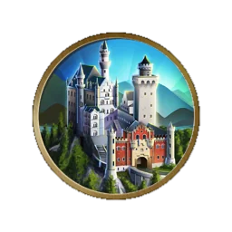

新天鹅堡
游戏信息:
每一座城堡+3 金钱，+2文化，+1快乐。
金钱，+2文化，+1快乐。
城市2格内的本国领土上必须有山脉方能建造本奇观。
金钱，+2文化，+1快乐。城市2格内的本国领土上必须有山脉方能建造本奇观。
引言:
“……选址是所能找到的当中风景最美丽的，圣洁而不可亵渎，一座配得起神圣朋友的圣所，他们给这个世界带来超度和真正的赐福。”
——巴伐利亚国王路德维希二世
历史信息:
新天鹅堡由巴伐利亚的“疯子国王”路德维希二世于19世纪末期授权建造，后来成为了常出现在儿童文学和寓言中的“童话式”城堡的象征。城堡矗立在距离德国小镇菲森不远的山麓上，路德维希打算把它当做自己远离公众视线的隐居地，这缘于他为人所共知的隐士性格。新天鹅堡在路德维希逝世后变成了一个著名的旅游景点，最后，它还被认为是华特·迪士尼创作著名的睡美人城堡的灵感来源。